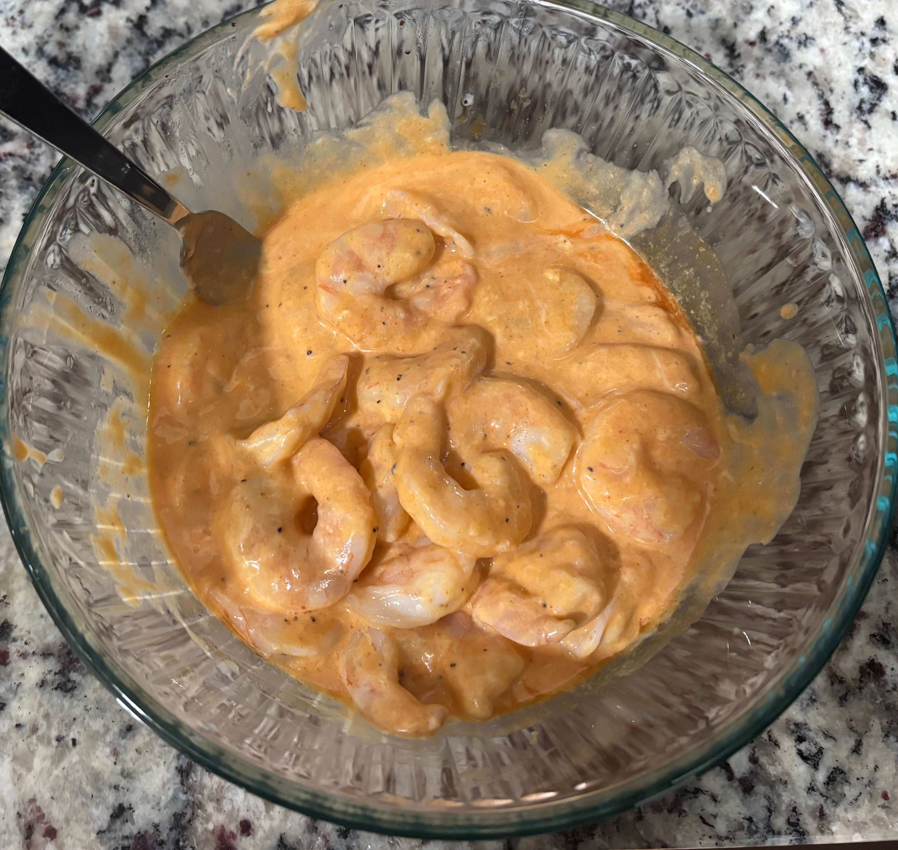

Home
Bang Bang Shrimp

Prep time: 15 mins, Cook time: 5-7 mins
Ingredients
- Raw deveined, detailed jumbo shrimp
- Olive oil
- Salt and pepper
- 1/2 cup mayonnaise (or 1/2 cup greek yogurt)
- 1/4 cup sriracha
- 2 tbsp honey or agave
- 1 tsp rice vinegar
- Green onions
- Sesame seeds
Steps
- Preheat your oven to 400 degrees F
- Thaw the shrimp and pat dry with paper towels. Toss them in a bowl with oil, salt and pepper
- Thread 4-5 shrimp onto each metal skewer
- Place the skewers on a wire rack over a paking sheet. Roast for 5-7 minutes until they are pink and opaque or until they reach 145 degrees F internally
- In a bowl mix together the mayonnaise, sriracha, honey, and rice vinegar for the sauce
- While the shrimp are still hot, slide them off the skewers into the bowl of sauce. Toss gently until they are fully covered
- Garnish with sliced green onions or sesame seeds
Tips
- You can use more or less sriracha based on heat preference
- If you use shrimp with the tail on you will have to cook it for longer in the oven but dont need to use as much oil when coating them before hand